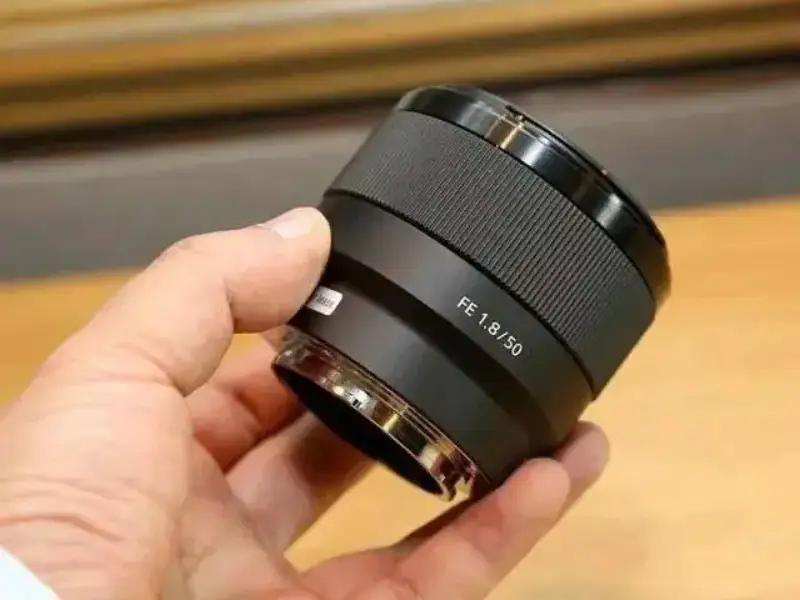
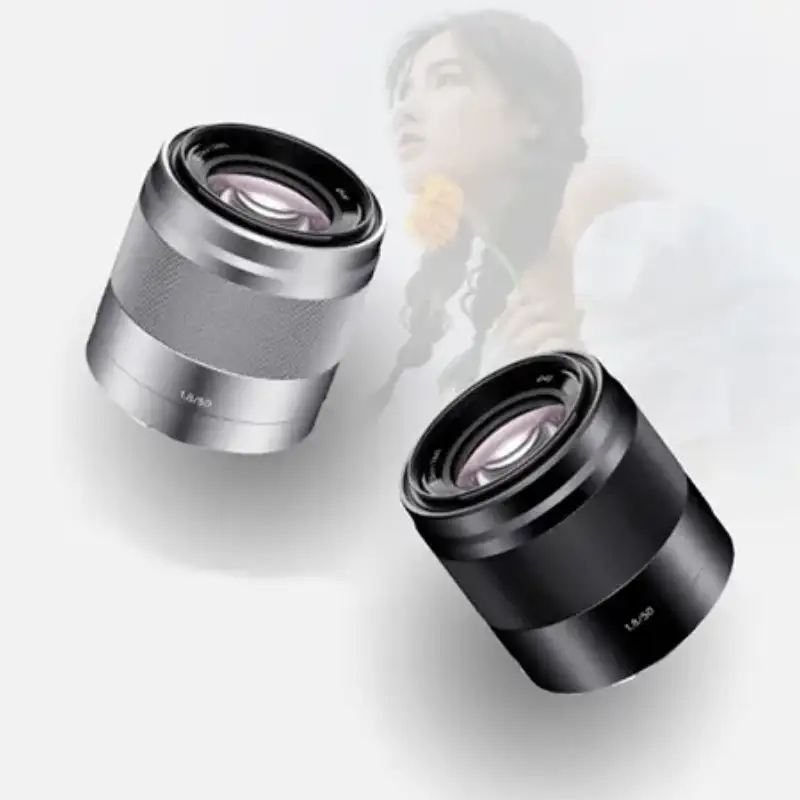
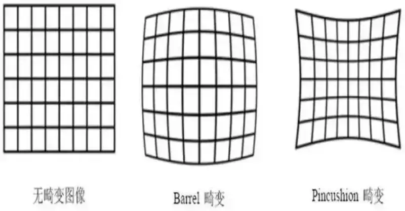
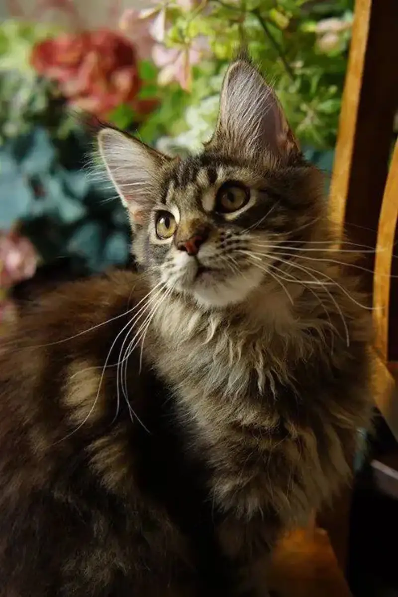
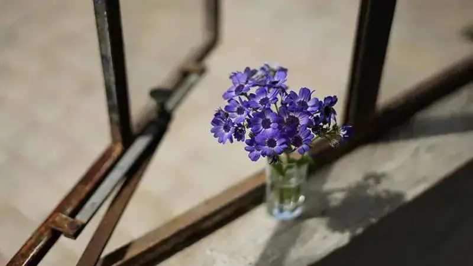

Published: 2022-08-10
Source link: https://www.cnphotos.net/academy/show-78.html
Why do photography fans like the 50mm prime lens? Today let us look at how to use this lens well.
Lens prices range widely, from a few hundred yuan to ten thousand. They meet the needs of both new photographers and enthusiasts.
The 50mm lens has a view close to the human eye. It makes the photographer feel present in the scene, and gives a stronger wish to shoot and create.

Photographers also love the 50mm for its large aperture. Many want the soft, blurred background and a dreamy mood.
Today we look deeper at why new photographers are told to use a standard lens.

The 50mm lens is called a standard lens. Where does the name come from?
The 50mm view is close to the human eye, and distortion is small. From the 50mm focal length, wide and telephoto lenses add distortion and change the view to different degrees. So 50mm is the benchmark focal length.

On the other hand, the standard lenses from every maker are similar in design. The design is almost standardized. This is another reason the 50mm is called the standard lens.

50mm F1.8 1/160s ISO200
Compared with other lenses, standard lenses usually have a large aperture. The largest can reach F1.0 or more, such as the Leica 50mm f/0.95 and the Zeiss 50mm f/0.7.
Today most standard lenses are split by price class. Entry-level models usually have a maximum aperture of F1.8 or F2.0. Enthusiast or pro models usually have F1.2 or F1.4.
Of course, aperture size goes with the result and the price. Lenses with a very large aperture cost a lot.
1. Limits build a stronger foundation
Without the convenience of zooming, you move your own body to frame the shot. This lets you experience photography more directly, and judge framing more accurately.
Once you have a base in framing, using a zoom feels easy. You put in more, and you gain more.
50mm f/13 13s ISO100
2. Clear, sharp images
A prime lens has a simpler glass structure. It cuts extra bending of light inside the lens, and gives a clear image.
50mm F1.8 F3.2 1/30s ISO1600
3. A larger aperture, more ways to shoot
A beginner can spend little to feel the soft blur of a large aperture. Different apertures give different results, and that is worth far more than the price gap.
50mm f/1.4 1/1250s ISO 100
4. Low-light shooting is easier
A prime lens can have a very large aperture. In weak light it lets in more light, and gives more room to set shutter speed and ISO. Shooting becomes easier.
50mm f/1.4 3.2s ISO3200
The prime design gives fine, layered images. The result is beyond what a small-aperture lens can match.
The 50mm has a quiet, calm way of telling a story. It is a classic among classics, both in its optical design and in the perspective it shows in the work.
50mm f/2.8 1/80s ISO100
A 50mm large-aperture lens gives many results. It can shoot small detail scenes and set a mood. It can also shoot architecture and portraits with minimal distortion. It is a very practical, all-round lens with strong value.
50mm F1.8 1/4000s ISO100
When you shoot small scenes, you can blur the foreground and background, and the objects outside the subject, and leave only a soft beauty of color. Based on the distance from the subject, the blur builds layers, and makes the subject stand out.

50mm f/2 1/3200s ISO100
Note this: when you blur the background at a wide aperture, use a safe shutter speed. Otherwise the shot blurs easily. This is where image quality is at risk.
A large-aperture lens is a dream for many photographers. When that large aperture sits on a 50mm standard lens, it becomes easy to get.
So it is no accident that the 50mm prime is standard for new photographers. A prime with a large aperture makes a high-value lens for practice.
If you chase the ultimate aperture, the f/1.2 is the final goal on your photographic path.